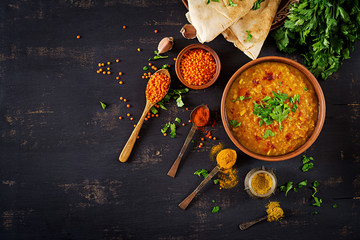
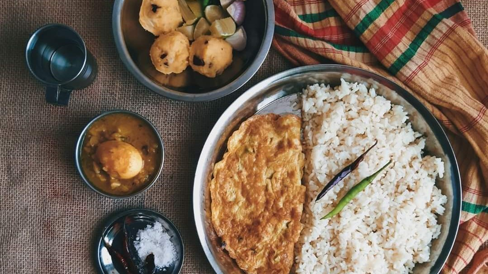

You’ve probably heard of the word ‘Punjabi’ many times, but maybe never really been sure what that means in relation to Indian food and how it differs from other regions in India. So, I thought I’d help break down this confusion… Punjabi cuisine is a culinary style originating in the Punjab, a region in the northern part of the Indian subcontinent, which is now divided in an Indian part to the east and a Pakistani part to the west. This cuisine has a rich tradition of many distinct and local ways of cooking. One is a special form of tandoori cooking that is now famous in other parts of Pakistan and India, England, Canada, America, and in many other parts of the world
Preparation Time: 15 minutes
Cooking Time: 20 minutes
Serves: 2
Ingredients for Shahi Paneer:
For Onion Tomato Puree
- 1 tbsp ghee
- 1 tbsp oil
- 1 tsp cumin seeds
- 1 inch cinnamon
- 2 cloves
- 2 green cardamom
- 1 black cardamom
- 1 bay leaf
- 2 green chili
- 1 tbsp ginger garlic paste
- 2 medium onion, cut into quarter
- 10-12 cashew nuts, soaked
- 4 medium tomato, cut into quarter
- Salt to taste
- ¼ tsp turmeric
For Final Assembly:
- 2 tbsp butter
- 1 tbsp kashmiri red chili powder
- 1 tsp coriander powder
- Prepared Puree
- 50 gms paneer, cubed
- ¼ cup cream
- 1 tsp kasoori methi, crushed
Process :
● Heat ghee in kadhai and add all the spices, followed by green chillies, ginger and garlic. saute for
a minute.
● Now add onion, cashew nuts and saute. Do not brown them and keep translucence.
● Add tomatoes, salt and turmeric; mix and saute for a minute. Now add ½ cup water; cover and
cook on low flame for 12-15 minutes. Stir it once again and allow it to cool.
● Now transfer this mixture into blender and blend until fine texture.
● Now pass this curry from the strainer to get that smooth and silky texture.
● Now heat butter in a non stick pan and add kashmiri red chilli powder and coriander powder.
Saute for a minute and add prepared curry. Stir gently for a while and add paneer cubes. Add
cream and sprinkle kasoori methi powder all over. Mix well and cook for another 2 minutes on
low flame.
● Before serving garnish with cream and sprinkle cardamom powder.
Preparation time: 20 min
Cooking time: 40 min
Serves: 4
Ingredients:
- For kadai masala
- 1 ½ tbsp Coriander seeds
- 2 tsp Cumin seeds
- 4-5 Kashmiri Red Chilli
- 1 ½ tbsp Peppercorns
- 1 tbsp salt
For Kadai Paneer
- 1 tbsp Oil
- 1 tsp Cumin seeds
- 1 inch Ginger, chopped
- 2 large Onion, chopped
- 1 tsp Ginger garlic paste
- ½ tsp Turmeric Powder
- 1 tsp Degi chilli powder
- 1 tsp Coriander powder
- 2 large Tomatoes, puree
- Salt to taste
- 1 tsp Ghee
- 1 tsp Oil
- 1 Medium onion, slice
- ½ Capsicum, slice
- 1 Tomato, slice
- Salt to taste
- 250 Gram paneer, slice
- 1 tsp Kashmiri chilli powder
- 1 tbsp kadai masala
- 1 tbsp Cream/ optional
- Coriander Sprig
Method:-
For Kadai masala
● Take a pan.
● Add coriander seeds, cumin seeds, Kashmiri red chilli, peppercorn and salt
● Dry roast it till you get a nutty aroma.
● Let it cool and grind it into fine powder.
For Kadai Paneer
● Take a pan, add oil/ghee.
● Now add cumin, ginger and saute well.
● Add onion, ginger garlic paste and saute till raw smell goes off.
● Add turmeric powder, degi chilli powder and coriander powder and saute well.
● Add tomato puree, salt to taste and water and let it cook.
● Take a pan, add oil/ ghee.
● Add slice onion, slice capcium, slice tomato and salt and saute for a minute.
● Add paneer slice to it and saute well.
● Add kashmiri chilli powder and prepared kadai masala to it and saute well.
● Add the prepared gravy to the pan and saute well.
● Add cream and mix well.
● Garnish it with coriander sprig.
INGREDIENTS:
-600 g katla machh (Catla or Rohu fish)
-8 g salt(for marination)
-3 g turmeric (for marination)
-80 g mustard oil
-10 g ghee
-4 pcs dried red chillies
-4 pcs bay leaves
-4 pcs cardamom
-4 pcs cloves
-2 pcs cinnamon
-1 tsp cumin
seeds
-150 g onion (paste)
-100 g onions (sliced)
-20 g ginger
-30 g tomato
-50 g yoghurt
-6 g turmeric
-2 g red chilli powder
-6 g kashmiri red chilli powder
-4 g cumin powder
-30 g raisins
-27 g salt
-35 g sugar
-500 g hot water
-½ tsp Bengali gorom moshla
-6 pcs green chillies
METHOD:
● Wash and thoroughly dry the fish. There should not be
any excess moisture on the surface of the fish.
● Sprinkle 8 grams of salt and 3 grams of turmeric powder
and toss to coat. Set this aside to marinate (in the
refrigerator if it is a hot day).
● Slice 100 grams of
cleaned onions along the length. These will be used to make
birista (fried onion).
● Roughly cube 150 grams of
cleaned onion and put it in the jar of a grinder.
● Peel fresh ginger, chop roughly and add it to the same jar.
● Grind the onion and ginger until smooth. Don't add any
extra water during grinding.
● Cube the tomatoes into
small chunks.
● Slit green chillies along the length.
● Weigh the yoghurt, then beat with a fork until smooth.
● Weigh out the dry spice powders in a bowl
together—turmeric, cumin, red chilli, and Kashmiri red chilli.
● Heat a kadai or a wok until very hot (250ºC). Pour all
of the mustard oil (80 grams) and wait for it to start
smoking. Once it smokes, lower the heat and wait for the smoke
to subside and the oil to cool down a little.
● Next, add the sliced onions from Step 3 and fry patiently until
barely light brown. This should take about 6 minutes for this
quantity of onions. Immediately strain and set aside.
Remember, the onion will keep darkening due to residual heat
even after you take it out of the oil. If it darkens too much
it will turn bitter.
● In the same oil fry the marinated
fish in small batches. Fry the belly pieces (peti) separately
from the back pieces (daga or gada). For a kalia, the fish
should be nicely browned outside. Set the fried fish aside. We
will cook the kalia in the same oil so that the sauce has the
flavour of the fish.
● Add ghee to the oil and wait for
it to melt.
● Lower the heat. Add dried red chillies, bay
leaves, and whole garam moshla, i,e, cardamom, cloves and
cinnamon, and finally whole cumin seeds.
● Add the onionand ginger paste. Braise this until it
darkens in colour and the moisture dries up.
● Add the dry spice powders, stir and sprinkle a couple
of tablespoons of hot water to preventthem from sticking to
the pan and burning. Braise until theraw smell of the spices
goes away (about 6 minutes).
● Add the salt and the sugar.
● Add the diced tomatoes and cook covered until softened. At
any stage during the cooking add splases of hot water to prevent
the spices from burning.
● Turn up the heat, and add the beaten yoghurt stirring vigorously
so that the yoghurt doesn't split.
● When the oil (rogan) floats to the top, add the raisins
and stir.
● Once everything is well cooked, add 500 grams
of boiling hot water.
● When the sauce comes up to the
boil, gently introduce the fried fish into the sauce. Also add
the slit green chillies and the fried onions from Step 12.
● Simmer the kalia until the consistency is like a sauce.
A kalia should not be too thick. Plus, keep in mind that the
fish will soak up a lot of the sauce and the gravy will
thicken by the time you serve it.
● Turn off the stove,sprinkle Bengali garam moshla and cover with
a tight lid. Let this rest for at least half an hour before serving
with plain boiled rice, or a polao.
Prep time: 10 mins
Cook time: 45 mins
Number of Servings: 4-5 persons
Ingredients:
- Paneer - 300 Gms
- Oil - 1 Tbsp
- Onion - 2 Nos (Chopped)
- Red Chilies - 10 Nos.
- Tomato - 3 Nos Chopped
- Salt - 1 Tsp
- Cashew Nuts - 1/4 Cup
- Ghee - 3 Tsp
- Kashmiri Chili Powder - 2 Tsp
- Garam Masala - 1 Tsp
- Kasuri Methi
- Coriander Leaves
- Unsweetened Khoya - 50 Gms
- Milk - 3 Tbsp
- Fresh Cream - 2 Tbsp
- Sugar - 1 Tsp
- Water - 1/4 Cup
- Salt - 1 Tsp
Method:
● Heat some oil in a kadai, add onions, red chilies, tomatoes, and
cashews and saute till they are completely cooked.
● Add salt and cook till tomatoes are mushy. Turn off the stove.
● Cool the ingredients and grind them to a smooth paste.
● Heat a kadai with ghee, add red chili powder.
● Pour in the ground paste and add a little water which was added to
the mixer jar to remove the paste stuck to it.
● Now add garam masala, kasuri methi and chopped coriander leaves.
● Close the kadai and let it simmer for about 10 minutes on low flame.
● To a mixer jar, add khoya and milk. Grind them into a fine paste to give
the curry a creamier texture.
● Add fresh cream, ground khoya mixture and sugar to the gravy and give
it a quick mix.
● Add water, season the gravy with salt and mix it well.
● Now add paneer cubes to the gravy, close the kadai and cook for 10
minutes on low-flame.
● Turn off the stove and serve it hot with a dollop of butter.
Preparation time: 10 minutes
Cooking time: 30 minutes
Serves: 2
Ingredients :
For the Gravy:-
- 4 large Tomatoes, cut into half
- 2-3 large Onions, sliced
- 3-4 Garlic pods
- 1 inch-Ginger, sliced
- 1 tbsp Degi Mirch
- 5-6 Cloves
- 1 inch-Cinnamon Stick
- 3 Bay Leaves
- 5-6 Black Peppercorns
- 2 Green Cardamoms
- 2 tbsp Butter
- Salt to taste
For Butter Chicken:-
- 2 tbsp Butter
- 1 tbsp Red Chilli powder
- 1 tsp Coriander powder
- Prepared Gravy
- 3 tbsp Fresh Cream
- 1 tsp Honey
- Cooked Tandoori Chicken, shredded
- 1-2 drops Kewra Water
- 1 tbsp Dried Fenugreek Leaves, toasted & crushed
- Burnt Charcoal
- 1 tsp Ghee
- Fresh Cream
- Coriander Sprig
Process :
For the Base Gravy
• In a heavy bottom pan, add ½ cup water.
• Add tomatoes, onions, garlic, ginger, degi mirch and all the whole spices. Mix well.
• Add 1½ tsp butter, salt and mix well. Cover the cook for 15 minutes.
• Once the tomatoes are soft, with a hand blender, blend the gravy till smooth.
• Strain the gravy through a strainer.
For Butter Chicken
• In a pan, add butter and allow it to melt. Add red chilli powder and coriander powder,
cook for a minute.
• Pour prepared gravy, mix well and cook for 2-3 minutes.
• Add fresh cream, honey, shredded tandoori chicken, mix well and cook for another 3-4
minutes.
• Add kewra water, dried fenugreek leaves and cook for 2 minutes.
• In a small metal bowl, add burnt charcoal and place it in the middle of the gravy.
• Pour ghee over charcoal and immediately cover with a lid, keep it 2-3 minutes for the
smoky flavour. Once done, remove the charcoal bowl.
• Transfer the butter chicken in a serving bowl. Garnish with fresh cream and coriander
sprig. Serve hot with roti or rice.
Ingredients:
- 750 gms Chicken
- 1/2 cup Curd
- 1/2 tsp Garlic Paste
- 1/2 tsp Ginger Paste
- 1/2 tsp Turmeric Powder
- 1/2 tsp Red Chilli Powder
- 1/4 tsp Black Pepper Powder
- Salt (as per the taste)
For Gravy :
- 3 tbsp Oil
- 1/2 Inch Cinnamon Stick
- 2 Green Cardamoms
- 2 Cloves
- 1/2 tsp Cumin Seeds
- 1 tsp Ginger (chopped)
- 1 tsp Garlic (chopped)
- 4 Onions (chopped)
- 1/2 tsp Turmeric Powder
- 1/2 tsp Red Chilli Powder
- 1 tbsp Coriander Seed Powder
- 2 Tomatoes (chopped)
- 1/4 cup Water
- 2 Green Chillies (chopped)
For Chicken Curry Gravy
- 1 tbsp Oil
- 1/2 tsp Cumin Seeds
- 1 tsp Ginger (chopped)
- 1 tsp Garlic (chopped)
- 1 cup Fenugreek Leaves (chopped & salted)
- 1 Onion (diced)
- 1 Capsicum (diced)
- 1/4 tsp Turmeric Powder
- 1/2 tsp Red Chilli Powder
- 1/2 tsp Cumin Seed Powder
- 1/2 tsp Coriander Seed Powder
- 1/2 cup Cashewnut Paste
- Salt
- 1/2 cup Water
- 1/2 tsp Garam masala Powder
- 1 Green Chilli (chopped)
- 1/2 inch Ginger (julienne)
- 1 tsp Dried Fenugreek Leaves
- 1/4 cup Fresh Cream
Method:
• Let's start with having Chicken in the bowl to which add Curd,
Garlic Paste, Ginger Paste, Turmeric Powder, Red Chilli Powder,
Black Pepper Powder, Salt (as per the taste).
• Next, mix it properly together and keep it aside.
• Now let's make the Gravy for which heat up the Oil in the Pan then
add Cinnamon Stick, Green Cardamoms, Cloves, Cumin Seeds, Ginger (chopped),
Garlic(chopped) fry them till the Ginger & garlic smell goes away.
• Now add Onions (chopped) and saute this till this is nice and brown then
add Turmeric Powder, Red Chilli Powder, Coriander Seed Powder saute
this for few seconds.
• Now add Tomatoes (chopped) saute it again till the Tomatoes are soft.
• Next, add Water then take the half of the Masala and keep it aside.
• To the remaining Masala in the Pan add the Marinated Chicken with Green
Chillies (chopped) now saute this chicken for 5 minutes then let it cook
with lid close on low flame till it is done.
• Next, let's make another gravy for which add heat up the Oil then add Cumin
Seeds, Ginger (chopped), Garlic (chopped), Fenugreek Leaves (chopped & salted).
• Now saute this for a minute then add Onion (diced), Capsicum (diced) again saute
it for a minute and add Turmeric Powder, Red Chilli Powder, Cumin Seed Powder,
Coriander Seed Powder.
• Next, mix it properly and add remaining Masala we have removed earlier then add
Cashew-nut Paste saute this for 3-4 minutes on low flame. Now add Salt, Water.
• Now add the gravy to the Chicken mix it properly to which add Garam masala Powder,
Green Chilli (chopped), Ginger (julienne), Dried Fenugreek Leaves mix it again and
cover it for 2 minutes.
• Now, add Fresh Cream mix it and your Chicken Patiala is ready to serve.
Preparation time 10 minutes
Cooking time 30-35 minutes
Serve 2-4
Ingredients :
- 2-3 tbsp Oil, तेल
- 2 tbsp Ghee, घी
- 2 Black cardamom, बड़ी इलायची
- 2-4 Cloves, लॉन्ग
- 8-10 Black peppercorns, काली मिर्च के दाने
- Prepared Ginger Garlic paste, अदरक लहसुन का पेस्ट
- 5 medium size Onion, chopped, प्याज
- Salt to taste, नमक स्वादअनुसार
- 1 ½ tbsp Coriander powder, धनिया पाउडर
- Marinated Mutton, मैरिनेटेड मटन
- 2-3 cups Water, पानी
- Prepared Onion Tomato Masala, तैयार किया हुआ प्याज टमाटर मसाला
For Ginger Garlic Paste :-
- ½ inch Ginger, peeled, slice, अदरक
- 5-6 Garlic cloves, लहसुन
- 2 Green chillies, हरी मिर्च
For Mutton Marination:-
- 800 gms Mutton, with bones, मटन
- 1 ½ tsp Degi red chilli powder, देगी लाल मिर्च पाउडर
- 1 tsp Turmeric powder, हल्दी पाउडर
- Salt to taste, नमक स्वादअनुसार
- ½ cup Curd, beaten, दही
For Onion Tomato Masala :-
- 1 tbsp Oil, तेल
- ½ tsp Cumin seeds, जीरा
- 1 tsp Coriander seeds, धनिया के बीज
- 2 Bay leaf, तेजपत्ता
- 1 large Onion, chopped, प्याज
- 2 Green chillies, chopped, हरी मिर्च
- ½ tbsp Coriander powder, धनिया पाउडर
- 1 tsp Degi red chilli powder, देगी लाल मिर्च पाउडर
- 2 small Tomatoes, chopped, टमाटर
- Salt to taste, नमक स्वादअनुसार
- Little water, पानी
- 1 tbsp tender Coriander stems, finely chopped, धनिया के डंठल
For Garnish :-
- 1 tsp Dry fenugreek leaves, crushed, कसूरी मेथी
- ½ inch Ginger, julienned, अदरक
- Coriander sprig, धनिया पत्ता
Process :
● In a cooker, add oil, ghee once it's hot, add black cardamom,
cloves, black peppercorns and let it splutter well.
● Add ginger garlic paste, onion and saute it well for 5 minutes.
● Add salt to taste and saute it until light brown in color. Add coriander powder and mix well.
● Add marinated mutton and mix it well. Add water and mix well.
● Cover it with a lid and cook on medium flame for 5-6 whistles.
● Let it cool at room temperature until pressure inside the cooker goes down naturally.
● Open the lid, add prepared onion tomato masala and mix it well.
● Just cover it with the lid without a whistle and cook on medium flame for 5-7 minutes .
● Transfer it into a serving bowl, garnish it with dry fenugreek leaves, ginger, coriander sprig.
● Serve hot with roti or steam rice.
For Ginger Garlic Paste :
● In a mortar pestle, add ginger, garlic, green chillies and grind it
into a rough paste and keepaside for further use.
For Mutton Marination :
● In a large bowl, add mutton, degi red chilli powder, turmeric powder, salt to taste, curd and marinated well. Keep it for 10-15 minutes.
For Onion Tomato Masala :
● In a shallow pan, add oil, once it's hot, add cumin seeds, coriander seeds, bay leaf and
let it splutter well.
● Add onion, green chillies and saute it well, add coriander powder, degi red chilli powder mix it well.
● Add tomatoes, salt to taste and saute well. add little water and let it cook on medium flame for 2-4 minutes.
● Add tender coriander stems and mix it well.
Ingredients:
Mutton – 1 Kg
-Strained Curd/Yogurt – 1 Cup
-Ginger-Garlic-Green Chili Paste – 2 Tbsp
-Coriander Powder – 3 Tbsp
-Red Chili Powder – 2 Tsp
-Kashmiri Red Chili Powder – 1 Tsp
-Turmeric Powder – ½ Tsp
-Cumin Powder – 1 Tsp
-Fried Onion (Beresta) – 1 Big
-Whole Black Pepper Corns (Gota Golmorich) – 1 Tsp
-Cloves – 1 Tsp
-Green Cardamom – 1 Tsp
-Black Cardamom – 2
-Cinnamon Stick – 2
-Mace (Jayitri) – 1 Small Clove
-Nutmeg (Jaiphal) – ¼ Tsp
-Salt, Sugar, Water, Ghee as Required
Cooking Dal :
- 1 cup of black gram / काली उरद दाल
- Red Kidney Beans / राजमा
- Salt
- Water
Tadka :
- 2 tbsp ghee
- 2 chopped onions
- 2 tbsp ginger garlic paste
- 3-4 tomato puree
- 1/2 tsp salt
- 1/2 tsp red chilli powder
- coriander leaves
- water
- 2 tsp coriander powder
- 1 tsp cumin powder
- 1 tsp garam masala
- Butter
- 1/2 tsp red chilli powder
- Fresh Cream
Method:
- In a pressure cooker add black gram, red kidney beans, salt, and water & keep it for 2-3 whistles.
- In a pan add ghee and onions and cook it until the onions turn brown.
- Add ginger-garlic paste, tomato puree, salt, red chili powder, and coriander leaves.
- Check if the dal is cooked and add it to the tadka and cook it for 7-8 minutes.
- In other pan add butter, red chili powder and pour it over dal and add coriander and fresh cream.
Dal Makhani is ready to be served!
PUNJABI RAJMA
Preparation Time: 20 minutes + soaking time
Cooking Time: 25-30 minutes
Serves: 4
Ingredients:-
- For Rajma
- 2 cups Rajma, soaked overnight
- Salt to taste
- Water to boil
For Masala:-
- 1 tbsp ghee
- 1 tsp cumin seeds
- 1 tbsp ginger garlic, coarsely ground
- 3 large onions, chopped/ grated
- Salt to taste
- 1 tsp turmeric powder
- 1 tsp red chilli powder
- 1 tsp coriander powder
- 1 tsp garam masala
- 3 large tomatoes, paste
- For Garnish:-
- Coriander sprig
- Ginger julienne
Process:-
●Add a pinch of salt to the over night soaked rajma, add water and required and boil them in
a pressure cooker for 3-4 whistles.
● Meanwhile prepare the masala, heat ghee in a pan.
● Add cumin seeds and saute for a minute. Add coarsely ground ginger garlic and saute till
fragrant.
● Add onions and saute till they turn brown. Add salt, turmeric powder, red chilli powder,
coriander powder and garam masala. Mix well.
● Saute for 3-4 minutes. Add tomatoes, mix well and saute till they start leaving their oil.
● Meanwhile, drain the rajma and reserve the water.
● Add the boiled rajma to the prepared masala and saute for 3-4 minutes.
● Add the reserved water as required, mix well and simmer on medium flame for 4-5 minutes.
● Garnish with ginger julienne and coriander sprig.
● Serve hot with rice.
Ingredients:
- For Malai Kofta Curry :
- Tel (Oil) - 1tbsp
- Makhan (Butter) - 2tbsp
- Dal Chini (Cinnamon) (2”) - 1stick
- Tej Patta (Bayleaf) - 1no
- Laung (Cloves) - 3nos
- Kali Elichi (Black cardamom) - 1no
- Elichi (cardamom) - 3nos
- Shahi Jeera (caraway) - 1tsp
- Pyaz (onion) chopped - 1 cup
- Hari Mirch (green chilli) chopped - 1 no
- Lehsun (garlic) chopped - 1tbsp
- Adrak (ginger) chopped - 1tbsp
- Haldi (turmeric) - ⅓ tsp
- Kashmiri chilli powder - 1 tbsp
- Dhaniya (coriander powder) - 1tbsp
- Jeera powder (Cumin) - ½ tbsp
- Tamatar (tomato) chopped - 2cups
- Namak (salt) - to taste
- Kaju (cashewnts) - handful
- Pani (water) - 2½ cups
- Kasoori Methi Powder - ½ tsp
- Chini (Sugar) - 1tbspv
- Cream - ¼ cup
For Kofta :
- Paneer (cottage cheese) - 1cup
- Aloo (potato) boiled & mashed - 1cup
- Dhaniya (Coriander) chopped - 1tbsp
- Adrak (ginger) chopped - ½ tbsp
- Hari Mirch (green chilli) chopped - 1 no
- Cornflour/Cornstarch - 1½ tbsp
- Namak (salt) - to taste
- Kaju (cashewnts) chopped - 2tbsp
- Tel (oil) - for frying
Ingredients (Serves 6):
FOR BOILING CHOLE-
- 2 cups Kabuli chana (small size)
- 6 cups Water
- 3-4 slices Amla (dried)
- 1½ tbsp Tea Leaves
- to taste Salt
- 1½ tsp Baking Soda
FOR CHOLE MASALA-
- 3-4nos Dry red chillies
- 1-2nos Bayleaf
- 6 tbsp Coriander seeds
- 3 tbsp Cumin
- 10-12 nos Peppercorn
- 7-8 nos Cloves
- 7-8 nos Cardamom
- a small piece of Mace
- 3 nos Cinnamon (1inch)
- ¼ no Nutmeg
- 3 nos Black cardamom
- 2 tsp Ajwain
- 2 tbsp Kasoori methi (dried)
- 4 tbsp Anardana Powder
- 2½ tbsp Amchur powder
FOR WET MASALA-
- ½ cup Oil
- ½ tsp Heeng (asafoetida)
- 2 tsp Garlic chopped
- 1 tbsp Ginger chopped
- 2 nos green chilli Slit
- ½ cup Onion chopped
- ½ tsp Turmeric
- ¾ tsp Kashmiri chilli powder
- 3 tbsp Chole Masala
- a dash Water
- ¾ cup Tomatoes (freshly pureed)
- to taste Black salt
- to taste Salt
- 2tbsp Tamarind Water
FOR TEMPERING:-
- 1tbsp Desi Ghee
- 1tsp Kashmiri chilli powder
FOR GARNISH :
- Boiled Potato diced
- Paneer Cubes
- Pickled Chilli
- Onion Rings
HUMMUS USING LEFTOVER PINDI CHOLE :
- 1 cup Leftover Pindi Chole
- 2 tbsp Onion chopped
- 2 tbsp Tomato chopped
- ½ no Green chilli chopped
- 2 nos Lemon Wedges
- Handful Coriander chopped
- Few Pita Bread
Preparation time 15 minutes
Cooking time 35-40 minutes
Serving 4
Ingredients :
- For Kheer
- 50-60 gm Short grain rice (Kolum, Sona masuri), washed & soaked , चावल
- 1 ltr Milk , दूध
- Few Vetiver roots , खस की जड़
- 100 gm Sugar , चीनी
For Garnish :
- Almond, sliced , बादाम
For Phirni :
- 50 gm Short grain rice (Kolum, Sona masuri), washed & dried , चावल
- 1 ltr Milk , दूध
- ½ cup Milk , दूध
- 1 tsp Saffron , केसर
- 100 gm Sugar , चीनी
For Garnish :
- Pistachio, sliced , पिस्ता
For Gulatthi :
- 1 cup cooked Rice , पके हुए चावल
- ½-¾ cup Water , पानी
- ¾-1 cup Milk , दूध
- 1 ltr Milk , दूध
- 2-3 Green cardamom, crushed , हरी इलायची
- ¾-1 cup Sugar , चीनी
- 2 tbsp Rose water , गुलाब जल
For Garnish :
- Dried Rose petals , सूखे हुए गुलाब की पंखुड़ियां
Process :
For Kheer
● In a kadai add milk bring it to a boil then add the washed & soaked rice.
● Let it cook on medium heat for some time then add the vetiver roots in a muslin
cloth and continue cooking until the rice has cooked properly.
● Remove the roots from the kheer and add sugar in it, stir it properly and give
it one last boil then switch off the flames.
● Serve hot or cold and garnish with sliced almonds.
For Phirni :
● Take the washed, soaked & dried rice and make a coarse powder.
● Put this powder in a bowl add milk, saffron and mix it properly.
● In a kadai heat milk then add the milk rice mixture and continue cooking on medium
● Heat until the rice has cooked and the mixture has thickened.
● Now add sugar and continue cooking for another 3-4 minutes and switch off the flames.
● Serve hot or cold and garnish with sliced pistachio.
Ingredients:-
- 400gms. Curd
- 7-8 tbsp. Sugar
- ½ tsp. Cardamom Powder
- Ice Cubes
Method:-
● Blend all the ingredients together in a mixer/grinder.
● Garnish with saffron strands, pistachios and almonds.
Preparation time: 30 minutes
Cooking time: 25 minutes
Serves: 2-4
Ingredients:
- For Milk syrup
- 1 ½ cups Milk, दूध
- 1 ½ cups Sugar, चीनी
- 4-5 Saffron strands, केसर
- Pinch of Cardamom powder, इलायची पाउडर
- 5-8 Bread sliced, ब्रेड
- Ghee for frying, घी
For Instant Rabri :
- Remaining Sweetened Milk, मीठा दूध
- ¾ cup Condensed milk, कंडेंस्ड मिल्क
- 2-4 Bread sliced, crumble, ब्रेड
- Pinch of Saffron, केसर
- ¼ tsp Cardamom powder, इलायची पाउडर
- 1 tsp Rose water, गुलाब जल
- ½ cup Milk, दूध
For Garnish :
- Saffron milk, केसर वाला दूध
- Rose petals, गुलाब की पंखुड़ियां
- Mint leaves, पुदीना पता
- Pistachios, blanched, slice, पिस्ता
- Silver warq, चांदी का वर्क
- Icing sugar, आइसिंग शुगर
Process :
● First, slice the crust of the bread. Cut them into triangles and keep it aside.
● Heat ghee in a deep pan, fry the bread slices on medium heat.
● Fry from both sides till it gets nice golden brown in color and crisp.
● Drain the bread slices on a paper towel.
● Now , dip the bread slices in the milk syrup. With the help of a spoon coat the bread slice evenly.
● Arrange the milk syrup soaked bread slices neatly in a serving tray.
● Sprinkle some cardamom powder on top of it and keep it aside for future use.
For Instant Rabri :
● Now strain the remaining sweeten milk in a deep pan, add condensed milk and stir well.
● Add crumble bread slice, pinch of saffron, cardamom powder, rose water and milk mix.
everything well.
● Now , blend the rabri to a smooth texture and keep it for cooling.
● Pour the rabri on the milk syrup coated bread slices evenly.
● Keep in the refrigerator to cool.
● Garnish with saffron milk, rose petals, mint leaves, pistachios, silver work and icing sugar.
● Serve chilled shahi tukda.
For Milk syrup
● Heat milk in a saucepot, add sugar, saffron strands and stir well. Let it boil for 2 to 5 minutes.
Preparation time - 30 minutes
No of laddus - 9 to 10
Ingredients:
- Gram flour (besan)- 2 cups
- Powdered sugar or bhura - 1/2 cup
- Ghee - 1/2 cup
- Cardamom powder -1/2 tsp